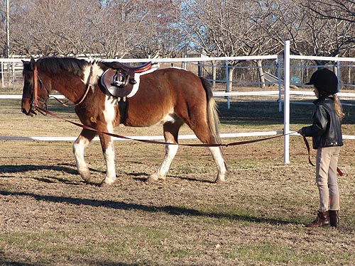

Riding Pooka A few days to settle in, and then
some time to see how he was under saddle.
First Amanda lunged him, then I got on
for a couple of
minutes. He was fine, so then Amanda on
the lunge and
then off on their own. They seem pretty
happy together.

First a little walk on the lunge to
warm up.
Then Amanda asked for a trot.
I think I'd be more comfortable bareback,
but we did a little walking and trotting to see how he felt.
Getting settled.
She said he didn't feel that different
from Thuy.
We're still working on hands at the
trot.
When she's reminded they go back down.
They were both pretty comfortable
on the line.
So I unhooked them and they walked
around.
They practiced going where Amanda
wanted.
When Thuy pulls down, he can pull
the reins out of Amanda's hands. Pooka wasn't able to.
When Pooka tried to go visit his friends
Amanda said no, and was able to turn him away. He is a pony, and they all
need to see what the limits are.
A little bit of trotting.
The second try was easier to turn
him away from his friends.
Walking out in the field. Sending
them out by themselves is the hard part.
Circling around the dead tree.
Walking over the cross tie.
First leading him over, in case he
wanted to take the opportunity to jump.
Then by themselves.
(They went back and forth over this a
number of times)
A little high headed at the trot.
For lunge lessons we'll probably use side reins to remind him where we'd
like his head to stay.
Amanda was great at taking directions.
Some more trotting on the circle.
Pooka would come right back to the
walk when Amanda asked.
Practicing stopping and standing.
We know how necessary that is for fox hunting.
Heading back to the tack room. Once
nice thing is she can get on and off Pooka without help. We're there to
be sure things are ok, but they seem pretty good by themselves.
It was good to see that they didn't
frustrate each other. We'll keep having an adult work with Pooka, but I
think slowly Amanda will be able to take on more responsibility.